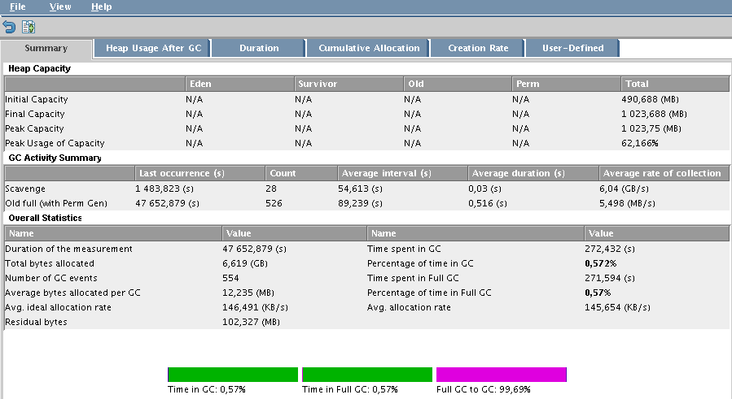

Debugger un crash de JVM
Contents
1 Introduction
Vous avez peut être une appli qui pose des problèmes du style elle crash, mais le port et le processus restent up quand même. Cela m'est arrivé notament avec le wiki Confluence d'Atlassian.
2 Problématique
L'appli crash, elle reste tout de même up au niveau du process et du port. Il faut donc débugger la JVM.
Je ne vais pas expliquer en détail comment une JVM fonctionne mais en gros :
- La mémoire attribuée a une application à son minimum est définit par l'option Xms. L'application à son lancement consumera la valeur du Xms (ici 1Go).
- La mémoire attribuée au maximum de l'application est définit par l'option Xmx. L'application réservera donc (ici) 1Go de mémoire au niveau de la RAM qui ne pourra être utilisée que par la JVM.
- Pour les choix de Xms et Xmx, il suffit de regarder (généralement l'application fournit ce genre de choses) la consommation de mémoire.
- Les GC (Garbage Collector ou purge de la mémoire) se font régulièrement lorsqu'on atteint environ 90% à 95% du Xmx. Ce qui a pour effet de libérer de l'espace mémoire d'objets stockés. L'inconvénient c'est que lorsque ce Full GC opère, l'application freeze temporairement. Il n'est donc plus possible d'accéder à l'application pendant cette période. Il est possible que les Full GC s'enchainent si le Xmx est trop bas puisqu'ils se lancent trop régulièrement. Ce qui a pour effet de freezer complètement (cette fois ci) l'application.
3 Changement des options de boot
Voici un exemple pour activer les loggc qui vont nous permettre de voir si la JVM fait trop de GC, voir un Full GC :
| |
year=`date '+%y'` month=`date '+%m'` day=`date '+%d'` hour=`date '+%H'` minute=`date '+%M'` time=$hour$minute date=$year$month$day LOGS=/var/www/confluence/logs JAVA_OPTS="-Xms1024m -Xmx1024m $JAVA_OPTS -Djava.awt.headless=true -Xloggc:$LOGS/confluencegclog_$date$time.txt -Dcom.sun.management.jmxremote -Djava.net.preferIPv4Stack=true -XX:MaxPermSize=256m" export JAVA_OPTS |
On met généralement ces lignes dans un fichier qui sera exécuté lors du lancement de notre application java.
4 Anayse des logs
Lorsqu'on regarde nos logs, nous pouvons voir s'il y a ou pas trop de GC. Par exemple ici, voici un cas où tout a crashé, donc un Full GC :
| |
34385.900: [GC 104787K->104783K(1048064K), 0.0117720 secs] 34385.912: [Full GC 104783K->104783K(1048064K), 0.5075120 secs] 34386.419: [GC 104783K->104783K(1048128K), 0.0064380 secs] 34386.426: [Full GC 104783K->104783K(1048128K), 0.5079230 secs] 34395.908: [GC 104787K->104783K(1048128K), 0.0115600 secs] 34395.919: [Full GC 104783K->104783K(1048128K), 0.5082900 secs] 34396.428: [GC 104783K->104783K(1048128K), 0.0131540 secs] 34396.441: [Full GC 104783K->104783K(1048128K), 0.5081760 secs] 34405.913: [GC 104787K->104783K(1048192K), 0.0118660 secs] 34405.925: [Full GC 104783K->104783K(1048192K), 0.5074950 secs] 34406.432: [GC 104783K->104783K(1048320K), 0.0124010 secs] 34406.444: [Full GC 104783K->104783K(1048320K), 0.5082180 secs] 47648.636: [GC 105297K->104783K(1048128K), 0.0107060 secs] 47648.647: [Full GC 104783K->104783K(1048128K), 0.5092390 secs] 47649.157: [GC 104783K->104783K(1048256K), 0.0118660 secs] 47649.168: [Full GC 104783K->104783K(1048256K), 0.5097090 secs] |
Je conseil également un outil graphique pour analyser les logs GC fait par HP qui s'appelle HPJmeter disponible ici. Voici ce que ça donne, on peut très clairement voir le problème du Full GC :

Sur l'image ci dessus, on peut très clairement voir qu'on est en Full GC. Et sur celui du dessous, on peut voir quand cela se produit :
{kind=link}
{kind=link}
5 Solutions
5.1 Solution 1 : Augmentation du Xmx
On va augmenter le Xmx car il se peut qu'il n'y ai pas assez de mémoire. Pour mon cas, je suis passé de 256Mo à 1024Mo pour être sûr que mon problème ne vienne pas de là. Donc dans les options, j'ai juste changé le Xmx et mis le Xms égale au Xmx.
Mettre les 2 (Xms et Xmx) a égale revient à empécher les Garbage Collectors trop répétitifs. L'inconvénient c'est que les objets ne seront pas purgés aussi fréquement qu'ils le devraient. Ce qui peut entrainer à le faire manuellement soit même (arrêt et redémarrage manuel planifié).
Si le problème persiste, passer à la solution 2.
5.2 Solution 2 : L'option MaxPermSize
Même si l'augmentation du Xmx fait freezer l'application, il se peut que cela vienne de l'option MaxPermSize qui n'est tout simplement appliquée. Par défaut c'est 64Mo et cela fait parti du Xms. C'est pour cela que le Xms doit être au moins 2 fois suppérieur au MaxPermSize. Encore une fois, pour ne pas être embêter et jouer l'assurance (aussi parceque mes serveurs le permettent), j'ai décider de mettre cette valeur à 256Mo. Il ne reste plus qu'a redémarrer l'application et là plus de problèmes.